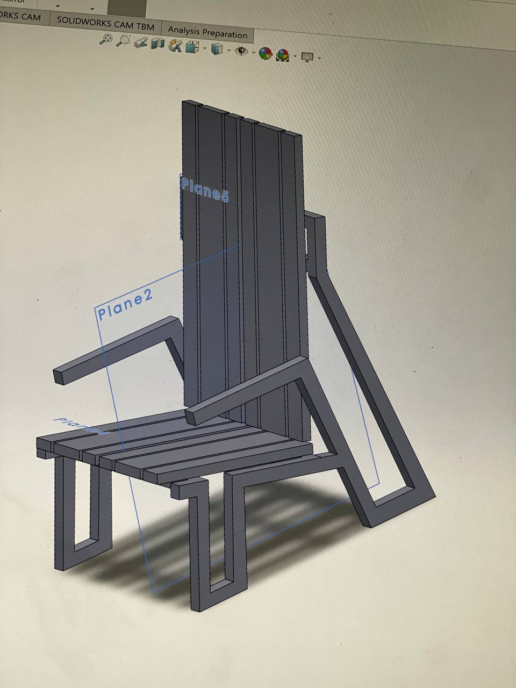
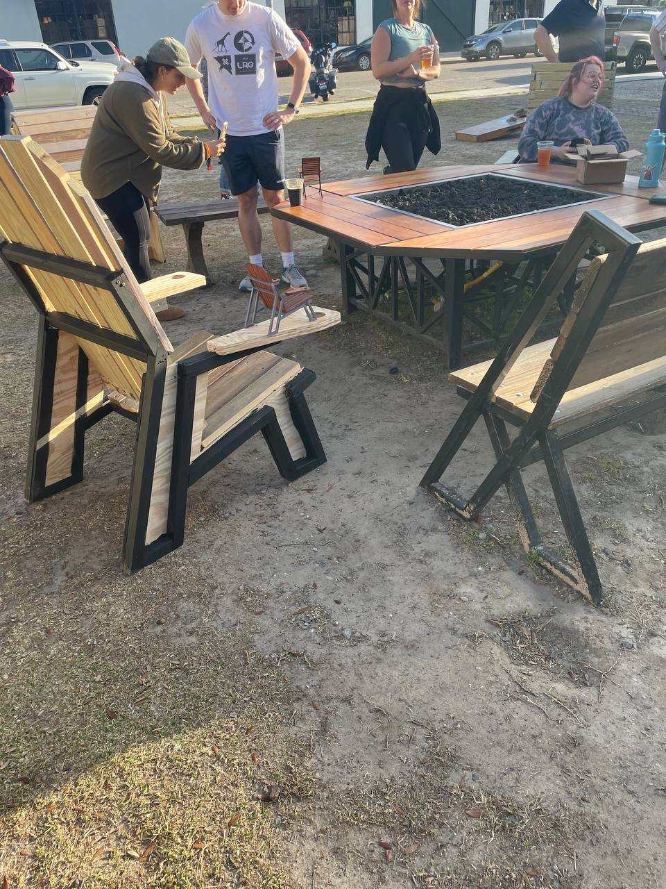
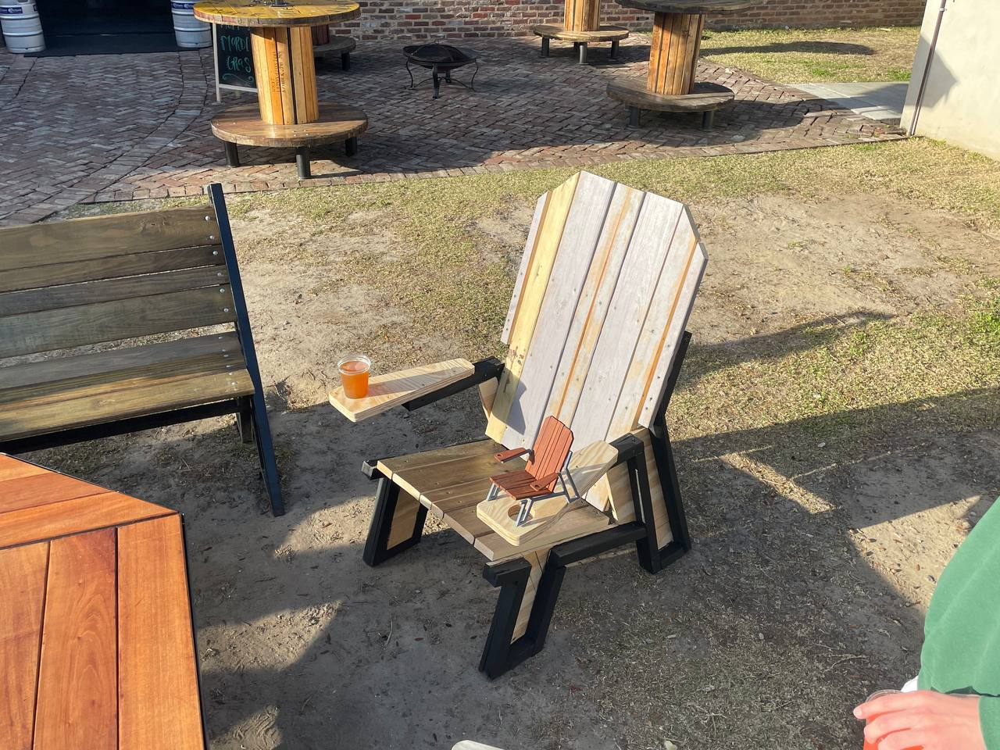
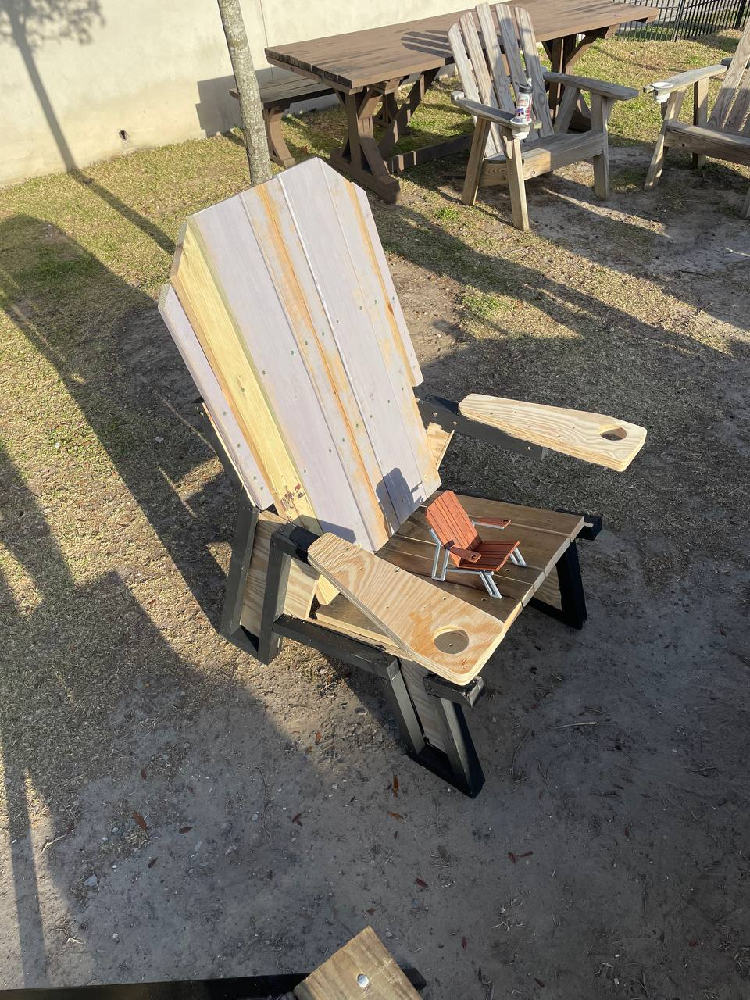
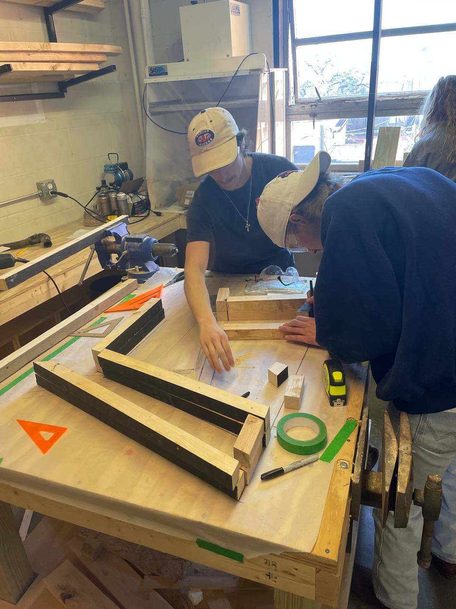
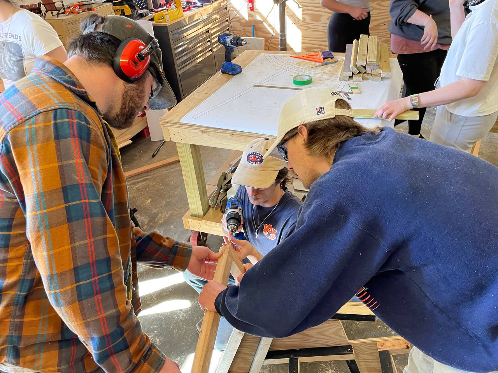
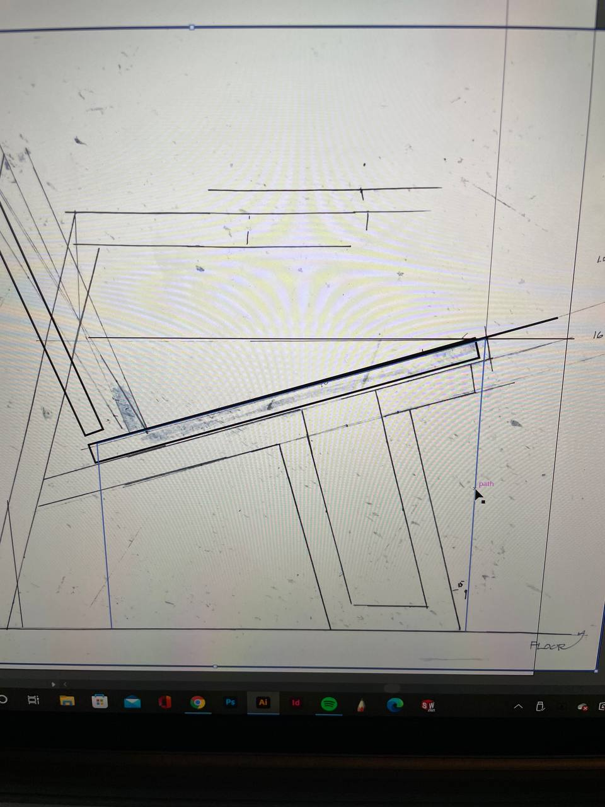

Traditional Adirondack chairs are deep, low, and tilted back 15 degrees. Great for 20 minutes. After that your head falls back onto the headrest — talking to the person next to you becomes a neck workout. And if you're older or have limited mobility, getting out of one takes effort.
The Sweetwater Chair pushes against both problems. The seat is raised so your feet can get back under you when you stand. The whole chair tilts slightly forward to take the load off your neck and open your posture for conversation. The A-frame leg structure handles the load geometry that makes the forward tilt work without the chair tipping.
The brief was a complete outdoor entertainment collection for Sweetwater Sound: chair, octagonal fire pit table, park bench, side table. Out of the whole class, Sweetwater selected four chairs for full-scale production. This one made the cut.
Full scale meant real fabrication. The A-frame legs are 1.5-inch square steel tube, cut to compound angles (22°/16°/18°) from a full-size printed engineering drawing laid out on a welding table, then welded and finished. Wood slats — seat pan boards at 20.5 inches, backrest boards at 35 inches, armrests at 22 inches — bolted to the frame. The completed chair was user-tested in the shop, presented to the client at their brewery, and installed at the outdoor venue.

SolidWorks — full assembly model

Illustrator fabrication drawing — all angles and board dimensions

Steel components laid out on full-size drawing — angles verified before welding

Compound angle cuts penciled onto the drawing before the saw

Full-scale build — Auburn ID shop, two-person assembly

First sit — the chair holds, the posture works

User testing — professor and client reviewers in the chair

Scale model on the sketches that produced it
Outcome — Selected for full-scale production by client
Frame — 1.5 in square steel tube, welded
Back angle — 22°
Leg angles — 16° front · 18° rear
Seat pan — 20.5 in × 1 in boards
Backrest — 35 in × 1 in boards
Armrests — 22 in × 1 in boards, cup holder
Tools — SolidWorks · Illustrator · Weld fab · Scale model
Collection — Chair · Fire pit table · Bench · Side table